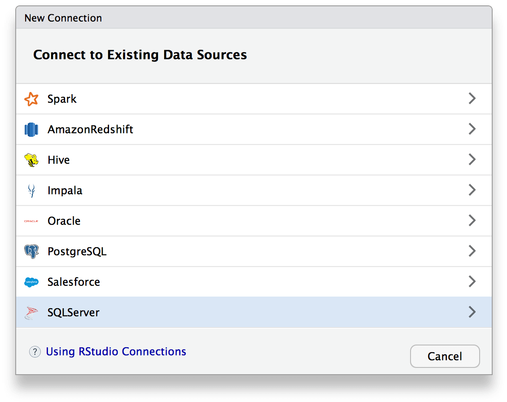

2017-10-16
Today we are excited to announce the availability of RStudio Professional Drivers. There are, of course, many ways to connect to Databases using R. RStudio Professional Drivers are specifically intended for use with our professional products, including RStudio Server Pro, Shiny Server Pro, and RStudio Connect. These data connectors combined with enhancements to dplyr, the odbc package, and the RStudio IDE provide a comprehensive suite of tools for accessing and analyzing data with your enterprise systems.
RStudio Professional Drivers help you connect to some of the most popular databases. Available for download today are ODBC drivers for Microsoft SQL Server, Oracle, PostgreSQL, Apache Hive, Apache Impala, and Salesforce. We will add several more drivers over the coming months. Don’t see your database listed? Please contact our sales team to let us know what you would like us to add.
RStudio Professional Drivers are intended for customers who need standards-based, supported data connectors that are easy to install and work with our professional products. They provide the following advantages:
If you are an existing customer, you can use RStudio Professional Drivers with your current version of RStudio Server Pro. The latest version of RStudio Server Pro (v1.1) has integrated support for using these drivers with Data Connections. When you install the drivers onto your server, RStudio Server Pro will automatically discover your drivers and populate the Connections wizard. Once you establish a connection you can browse your data source catalog and schema in the Connections tab.

Many Shiny applications and R Markdown documents are designed with database backends. With RStudio Professional Drivers you can develop and publish your content using the same data connectors systemwide. These drivers also ensure that your production ready applications are backed by professional software and support. Use these drivers when you run Shiny in production with Shiny Server Pro or RStudio Connect.
RStudio Professional Drivers are intended for customers who need supported data connectors that are easy to install and work with our professional products. But alternative options exist for various data sources. The RStudio IDE, the odbc package, and dplyr will still work when you bring your own ODBC driver. To learn more about best practices when using data connectors, see our new website, Databases using R.
If you are a current customer or if you are evaluating RStudio professional products, you can download RStudio Professional Drivers today for no additional charge. If you are interested to learn more about how RStudio professional products can help you and your organization, please contact our sales team for more information or email us at info@rstudio.com.